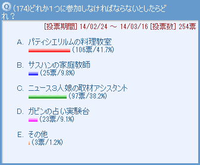
個性豊かな妖精たち、そんな個性を伸ばすための企画が妖精学校などで行われていそうですよね。ということで、今回の投票は、個性派な妖精たちにはりきってもらいました。結果はパティシエリルムが１位！！ 皆さん度胸あり過ぎです(笑)。とはいえ、リルムはすごくうれしそうに料理を教えてくれそうだから、（出来上がる料理は抜きにして）すごく楽しそうな光景があるような気がしますね。２位のニュース３人娘の取材アシスタントも、小さな事件が意外な展開に発展しそうでやはり楽しそうです。［コメント一覧］
リルム＆ヤシチ(1)
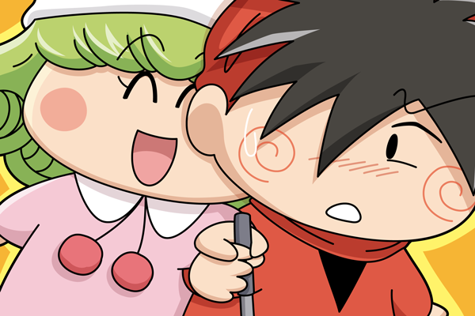
リルム「ヤシチさん、もっと肩の力を抜いて
ゆっくりかき混ぜてくださいですわ！」
ヤシチ「お、おう・・・」
（こんなに接近されるとドキドキするのだ・・・）
この後はリルムの料理に対する情熱や気合いが爆発し、ヤシチの腕ごとぶんぶん振り回しながら料理をめちゃくちゃにかき回すリルムであった・・。
２回連続のリルムです～。料理作りに励むリルムは以前にも描いた気がするので、調子に乗ってヤシチとの異色な組み合わせにしてしまいました(^^;。アニメでもヤシチは一瞬リルムのことを気にするシーンがありましたが、こうして描いてみてもこの二人はやはり似合わないですね(笑)。
そういえばヤシチはスケベな設定ですが、意外に女の子に対してはウブな気がします。積極的な女の子が現れたら、すぐに心奪われてしまいそう。もちろんヤマネが黙って見ているはずもなく、全力で止めに入るのでしょうね。(2014/8/26)
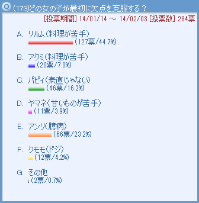
久々の投票結果の更新ですみません。今回は「裏の」女の子対決ですね。ミルモに登場する妖精は、かわいい女の子でも何らかの欠点を持ってるという個性が素晴らしいです。そんな個性で見事１位に輝いたのはリルムでした！ さすがは妖精界のヒロイン、アニメでもミルモを何度も苦しめたという貫禄の違いを見せつけてくれましたね。しかしリルムが欠点を克服できる光景が全く想像できなかったり…（どの妖精も克服できなそうですけど）。［コメント一覧］
リルム＆パピィ＆アロマ(1)

リルム「さぁここでわたくしのとっておきの魔法を・・」
パピィ「絶対だめーーーっ」
アロマ「また恐ろしい怪物が生まれちゃう・・」
リルム「もう、お二人とも大げさなんですから。
さっきはちょっと手がすべっただけですわ！」
うーん、気が付いたら欠点を克服できていない絵になってしまいました(笑)。やっぱりリルムが作る料理は誰にも真似できないスゴい料理を期待しちゃいますよね。
アニメではリルムが料理するたびに、作られる料理はどんどんエスカレートしていましたが、今頃はどんな料理を作っているんだろう？ もしかしたら妖精界滅亡の危機を招いているかもしれません。それだけで劇場版のストーリーが１本出来上がってしまいそう！？
ちなみにリルムの両脇にいるパピィとアロマも料理は苦手な方と、私は勝手に考えています。がさつなパピィはさておき、世間知らずなアロマも小さじと大さじを間違えたり、勘違いしてレシピと違う食材を入れたりしてすごい料理を作ってくれそうな予感。！(2014/8/26)

ミルモの再アニメ化は誰もが望む願いですよね。そんな願いがかなう日を夢見て、今回の投票のお題を考えてみました。新アニメの主人公、その他の楓ちゃんやガイア族の声が多い中、僅差でワルモ団が１位をゲットしました(^^;。ワルモ団が主役になると、何をやっても失敗する切ない大人の視点で描かれそう…。そしてミルモが悪者として描かれたりして。でもそれだけだとマンネリになるので、恋の場面なども描かれるかもしれませんね！［コメント一覧］
ワルモ団(1)
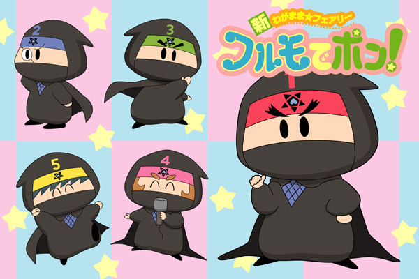
新アニメのプロモーション画像を意識して描いてみました・・・が、うーん。せっかくワルモ団が主役なのでもうちょっとストーリー性をこめてもよかったかもと早くも後悔してます(^◇^;)。
そしてイチローが他４人よりも大きめに。他の４人が見たら間違いなく文句を言うでしょうね。でも残念ながら、私の中ではイチローがみんなをまとめる良きリーダーであることには変わりはないのです。他４人も、なんだかんだ文句を言いながらもイチローに頼っているところもありますしね！(2014/4/18)
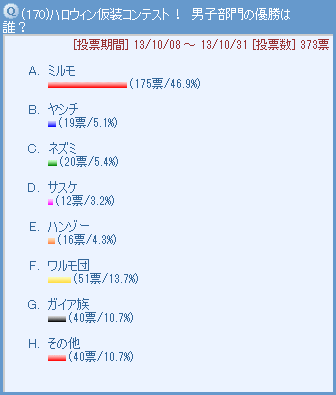
だいぶ季節外れになってしまいましたが、ハロウィンの投票結果になります！ 今回は男性陣限定の投票でしたが、なぜかミルモが圧倒的な１位に！ まぁもともと女装好きなミルモさんではありましたが、ハロウィンの仮装ははたしてやる気になるのか気になるところです。２位のワルモ団は、お互い個性が反発し合う５人なので、５人見事にかぶらない仮装をしてくれそうです。それはガイア族も同様なのかな？［コメント一覧］
ミルモ＆リルム(13)
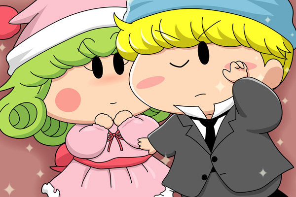
ミルモ「ここは私にお任せを。
リルムお嬢様は下がっていてください」
リルム「はいですわ、ミルモさま（ハート）」
（このシチュエーションはフィクションです。
というか、リルムの妄想です(^^;）
ミルモの仮装コンテスト１位記念に、執事に仮装するミルモを描いてみました。ミルモなら自分から絶対にやってくれなそうな仮装ですね(笑)。かと言ってお化け系はミルモは苦手だし・・といろいろ考えた結果、なぜか腐女子展開に…。
私の頭の中にはスリムでかっこいいミルモのイメージがあったのですが、絵にしてみると全然かっこよくないですね～。妖精のふっくらほっぺに原因があるのか、私の画力の問題なのか…。アニメで素直になったミルモはかっこよさが感じられたので、やはり後者の画力の問題ですね(^^;。
それでも仮装ネタは楽しいので、今度はサスハンなど、サブキャラでいろんな仮装をさせてみたいです。ハンゾーに似合う仮装は・・何だろう？(2014/3/16)
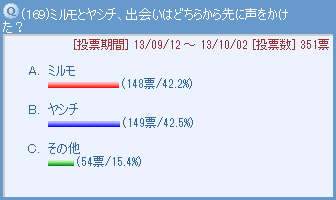
今回は幼い頃のミルモたちをアンケートしてみました。ミルモとヤシチは幼い頃からの腐れ縁な設定ではありますが、その二人の出会いのシーンが描かれることはありませんでした。投票の結果は・・・これはほぼ同数ですね（１票差でヤシチ？）。どちらから話しかけたというよりも、気が付いたら一緒にいた…のかもしれません。このあたり、アニメ第２期が放送されるなら見てみたいですよね。［コメント一覧］
ミルモ＆ヤシチ(9)
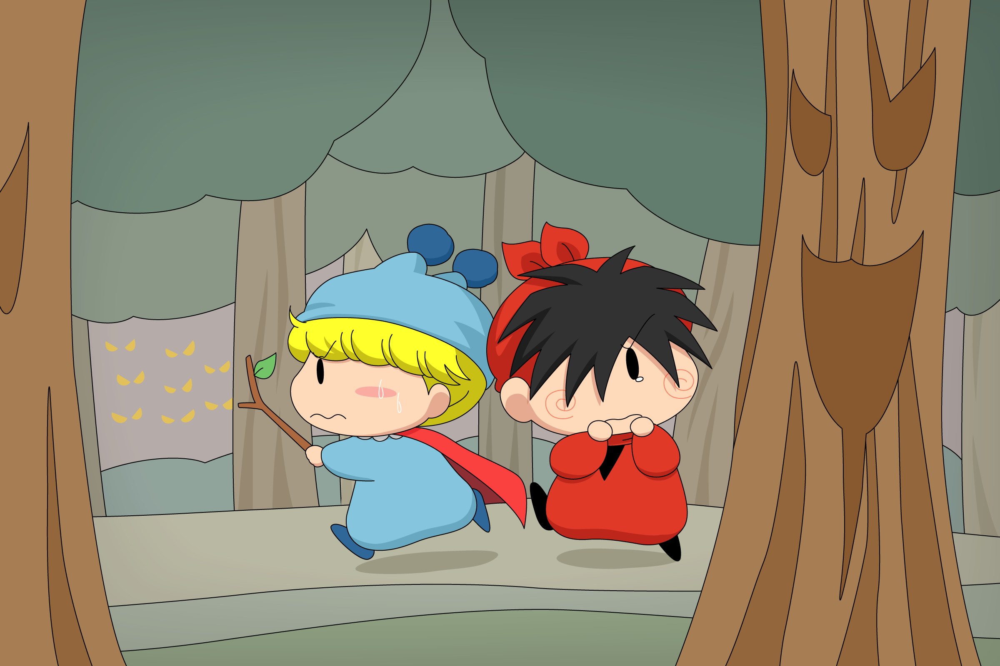
今から数年前のお話―――。
一人、迷いの森へ向かって歩いていた王子ミルモ。
その森の手前で手裏剣の修行をしていたヤシチの目にも、ミルモの姿が映りました。
ヤシチ「おぬしは一人で迷いの森へ行くのか？」
ミルモ「おう、このあたりで制覇できてないのはこの森だけだからな」
ヤシチ「やめておけ。
一度入ったら出られないって言われてるぞ？」
ミルモ「おふくろもそんなこと言ってたけど、
そんなの迷信に決まってんだろ？
誰が何と言おうとオレは行く！」
ヤシチ「おぬしだけだと心配だから、拙者もついていってやる！」
なんとなく一緒に行動することになった二人。
そして・・・。
ヤシチ「本当にこっちで合っているのか・・？」（弱弱しい声で）
ミルモ「オレだってわからねぇ。
でもここで待っていても助けはこねぇだろ？」
この後１時間くらい森の中を歩き回ったところで、二人はお城の兵士たちによって助け出されました。恐怖体験をしたヤシチがミルモに何かとつっかかるようになって今に至る・・・だったりして！？
う～ん、いまいちだなぁ。どなたか、もっとドラマティックで運命的な二人の出会いを考えていただきたいです。なぜヤシチが執拗にミルモに絡むのか、これを証明するのがなかなかむずい。。(2014/1/26)
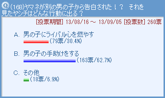
今回はヤシヤマCPについてのお題です。ヤマネの恋心に全く気付いていないヤシチのイメージが強いのか、ヤマネを困らせるのが好きなのか、お約束の選択肢が１位に選ばれて私もうれしかったりします。そしてムルモ屋本舗では今後もヤシヤマCPのほのぼの展開を追い求めていくつもりです。その他のコメントにある、ミルモたちに助けられるという展開もいいですね。ヤシチ以外の全員がヤマネの恋心に気づいているというピエロ的な役割もヤシチによく似合います(^^)。［コメント一覧］
ヤシチ＆ヤマネ(16)
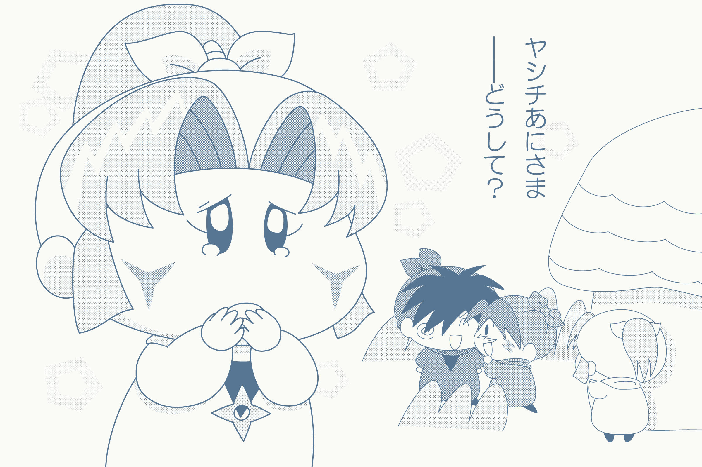
これ以上の説明が不要な展開を描いてみました。ヤマネを好きになった男の子妖精は、細かな設定を考えるのが面倒だったので、今回限りのテキトーに描いたモブキャラです(^^;。
あまりにいつも通りだったので、なぜか絵柄を少女漫画風にしてみました。いざ描いていると、ヤマネの恋心をいつもの倍くらいに感じることができて、少女漫画の構成の魔力を思わず感じました(^◇^;)。
スクリーントーンも意識してみましたが、お絵描きに使っているIllustratorは漫画作成向けではないので、スクリーントーンのパターンの編集が結構面倒くさかった…。コミックスタジオだとスクリーントーンは楽々に使えるのかな？ そして丸ゴシックフォントがちゃお等で使われているフォントとビミョーに異なるので若干の違和感が…。あれは何て名前のフォントなんだろう？(2014/1/20)
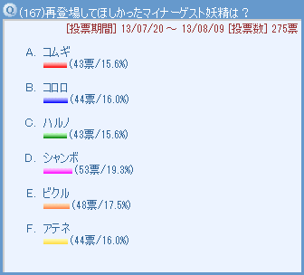
アニメミルモには『ゲスト妖精』と言われる登場が１回きりの妖精がいます。ソフトやカメリといった人気の高い妖精とは対照的に、あまり話題に上らないマイナーな妖精がいるのも事実。今回はそのマイナーゲスト妖精を対象に投票を実施・・・しましたが、関心の低さが表れているのか、結果はほぼ横並びですね(^◇^;)。というか、皆さん６人の妖精の名前と顔は一致するのでしょーか？ １位に選ばれたシャンボはヤマネと間違われるためだけのキャラでしたが、別のシーンでの絡みも見てみたかったですね。［コメント一覧］
シャンボ(1)
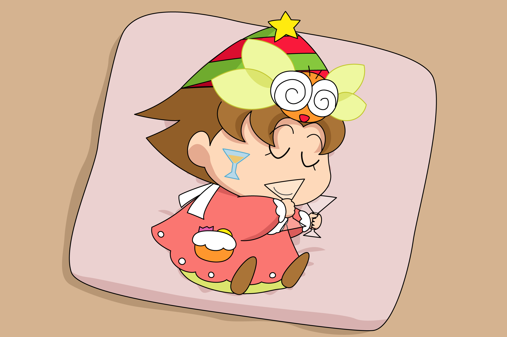
本当はシャンボとミルモたちとの絡みを描こうとしましたが、「なんだぁ？」とびっくりするありきたりなシーンしか思い浮かばなかったのでやめ・・。その代わりにシャンボの寝顔を描きました（ぇ。シャンボは夢の中でもパーティーで盛り上がっていそうですね。
それにしても、シャンボが人間界でパートナーを探していた理由って何だろう？ 妖精界ではシャンボに付き合ってくれる妖精がいなかったのか？ シャンボの理想にかなうパートナーが見つからなかったのか？ など、妖精界で何かあった説を考えたりしましたが、実際はそんな深い理由などなく、ヤマネの間違われ役として用意されただけなのが真相でしょうね(^^;。
ところでシャンボの横顔（髪型）は描くのがとても難しいです。絵に自信のある方はぜひ挑戦を！！(2014/1/13)
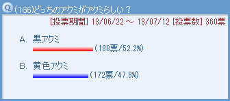
アクミは黒アクミ派と黄色アクミ派に分かれるように思いますが、今回はどっちがはたして有力なのかをアンケートしてみました。その結果は黒アクミ。やはりアニメ２年目の１年間をほぼレギュラーで活躍した印象が強いからかなと思いましたが、コメントを見ると、小悪魔という本来のアクミを推す声も多かったですね。逆に黄色は似合わないという声も！？ アクミ本人にもどっちが好きなのか聞いてみたいところです。［コメント一覧］
アクミ(6)
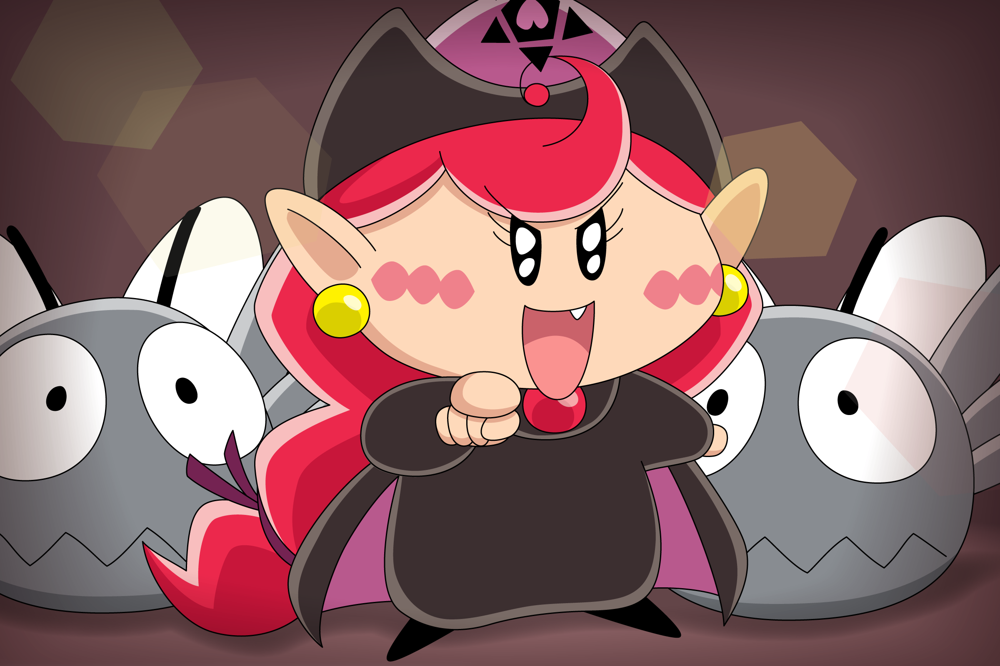
黒アクミが優勢ということで、今回はストレートに黒アクミを描いてみました。私的に黒アクミが最も輝いていたと思える６５話「とにかくすごい魔法（後編）」をベースに、魔法スイッチョを添えて。と思ったら、うっかりスイッチョを大きく描きすぎてしまいました。バージョンアップしたスイッチョを引き連れてきたということで。。
ごおるでんの頃のアクミはギャグ役に回ってしまった感じでしたが、２年目前半の頃は悪の限りを尽くして、小さな子にも怖い印象を与えていたのかもしれませんね（ダアク様ラブなシーンは除いて）。私はごおるでんの頃の（ラットにいろいろ突っ込みを入れられる）アクミが好きですが、２年目前半のアクミも見直して、怖いアクミ姉さんもまたいろいろ描いていきたいです。(2013/12/31)
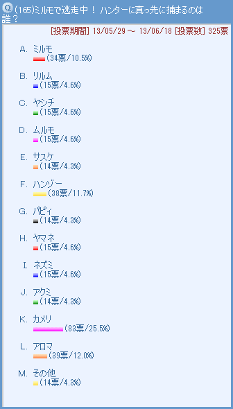
前回からずいぶん間が空いてしまいすみません。年末作業も落ち着いてきたので、またサイト更新を復活させていきます！
さて５月頃の投票結果になりますが、人気番組『逃走中』をテーマに投票を行ってきました。個性豊かな妖精たちは、最後まで大活躍を遂げたり、またハンターにすぐに捕まってしまう妖精などいろいろ目立つことをしてくれそうですが、今回はカメリが真っ先に捕まる妖精としてダントツトップに。２位３位のアロマ・ハンゾーも含め、行動がゆっくりな妖精がばっちり選ばれた結果となりました。別の機会に、今度は最後まで残る妖精の投票も行ってみたいですね。［コメント一覧］
ムルモ＆パピィ＆カメリ＆フィア(1)
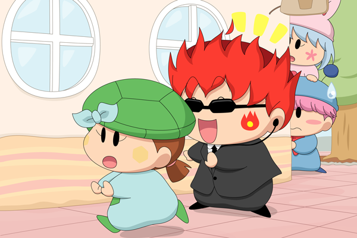
カメリ「たす～け～て～～～」
フィア「ったく、参加するならもうちょっとオレを楽しませろよな！
（楽しそうな表情で）」
ムルモ「カメリしゃん、捕まるの早過ぎでしゅ・・・」
パピィ「まだ３０秒も経っていないわ・・」
ムルモ「逃走中が始まって以来の記録かもしれないでしゅね」
投票結果を受けて、ハンターに捕まるカメリを描いてみました。逃走中はあまり見たことがないので、ハンターは画像検索で表示した画像を見ながら描きましたが、スーツ姿を描くのがこんなにも難しかったとは・・！
さて今回一番悩んだのが「ハンターを誰にするか？」です。ハンターは集団で行動するのでグループな妖精かなと思ったものの、ワルモ団だとハンターの「絶対に逃げられない」感が出せなそうだったので、ガイア族にしてみました。ハンター姿のフィアは・・あまり似合っていませんね(^^;。絵にはいませんが、別の場所でアクアやピクモたちが今頃妖精たちを追い掛け回していることでしょう。(2013/12/15)
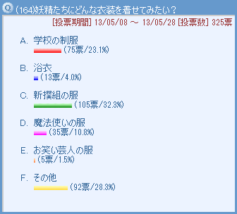
妖精たちの着せ替えネタは何度か行っていますが、久々に…。私の方で勝手に選択肢を用意しましたが、咄嗟に思いついた新撰組の衣装がダントツでした。普段は洋装が目立つ妖精だからこそ、和装へのイメチェンがトップに選ばれたのかもしれませんね。その他にあるミリタリー系、そして男子のドレス姿もいつか描いてみたいです(^^)。［コメント一覧］
ムルモ＆サスケ＆ハンゾー＆ヤマネ＆パピィ(1)
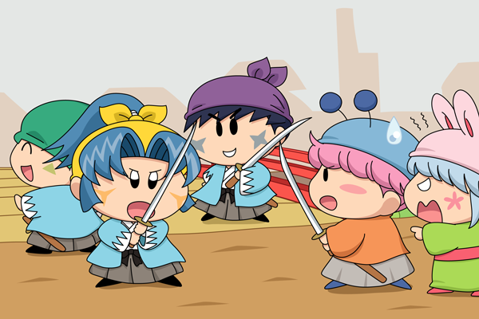
ヤマネ「見つけたでございます！」
サスケ「観念しろだぜ、ムルモ～」
ハンゾー「なのら～」
ムルモ「な、なんでしゅか、お前たちは・・！」
ヤマネ「ミルモ殿の命を狙う輩は私たちが排除するので
ございます。覚悟っ！」
パピィ「こーんなやつらに負けたら承知ちないわよ！
早くやっつけちゃいなちゃい、ムルモ！」
ムルモ「パピィに言われなくてもわかってるでしゅ！
おまけの二人は弱そうでしゅが、ヤマネしゃんは
手ごわそうでしゅね」
サスケ「オイラたちはおまけじゃないぜ！」
ハンゾー「ムルモもパピィも痛い目見るといいのら～」
新撰組の有名な３人をちびっこ妖精忍者で描きました。ヤマネ＝近藤勇、サスケ＝土方歳三、ハンゾー＝沖田総司で描きましたが、皆さんのイメージと合いますでしょうか？
新撰組と言えば、幕府を倒そうとする反逆者を取り締まる組織。将軍ミルモのわがまま王政を崩壊させようとするムルモ＆パピィに対し、ヤマネたちが前に憚ります。しかし倒すべき真の相手がミルモであることを、ヤマネたちはまだ気づいていないのであった・・・。
本当はヤシチやネズミも描きたかったのですが、絵のスペースの都合で・・(^^;。ぜひ皆さんも新撰組にチャレンジしていただければと思います。(2013/10/19)
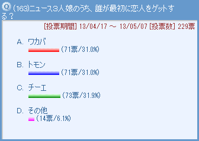
ちゃお読者投稿によって誕生したニュース３人娘はそれぞれ個性豊かで今でも人気ですね。普段はスクープ記事を追い求める３人も、やはり女の子なのでいずれは恋人をゲットするはず。今回の投票ではなんと大穴(?)とも言えるチーエが最初に恋人ゲットの結果となりました。あまり男の子に興味を示さなそうなチーエですが（ワカバも一緒か…）、皆さんならどんなお相手を想像するのでしょうか？［コメント一覧］
ハンゾー＆チーエ(1)
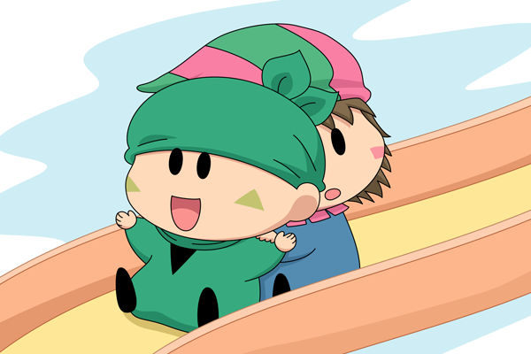
お題に合わせて、最近ミルモファンの間でブームになっているハンチエを描きました。ハンゾー→チーエらしいです。お互いマイペースでのんびり屋タイプなので、二人の波長はぴったり合いそうですよね。
絵についてですが、恋に目覚めたハンゾーが毎日のようにチーエのところへ遊びに通っている光景を描きました。ハンゾーはチーエを見つけるとすぐに公園へ行こうと誘います。
私の想像するハンチエは、ハンゾーは恋とかよくわからずに、チーエに居心地の良さを感じています。チーエも最初は楽しくハンゾーと遊んでいたものの、やがて取材の足手まといにもなってくると、チーエはハンゾーから少し距離を置いてみたり。そして甘えん坊のハンゾーのわがままっぷりが炸裂する展開へ・・・。(2013/8/7)
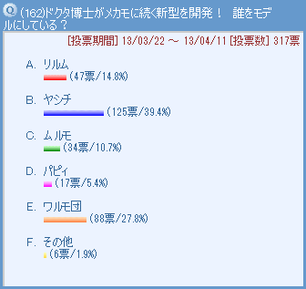
アニメではミルモそっくり(?)のメカモを開発したドクタ博士。メカモに続く新型を開発するとしたら…というテーマで投票を行いました。私的にはヤシチの結果は意外…。てっきりリルムかムルモかなぁと思っていましたので。皆さんメカヤシチに何をさせようとしていたのか気になるところです。コメントにある他の妖精忍者との合体も面白そう。私はメカ系ジャンルは不得意なので、自信のある方はぜひ合体ロボを考えてほしいです！！［コメント一覧］
ミルモ＆ヤシチ(8)
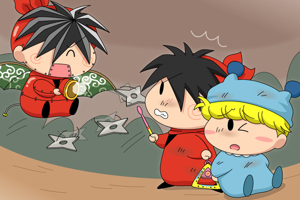
ミルモ「くそー、なんだってヤシチがいきなり強くなってんだよ・・・」
傷ついたミルモの後ろから、ヤシチが現れました。
ヤシチ「ミルモ！ 拙者も助太刀いたすぞ」
ミルモ「なにーー！？ ヤシチが二人！？」
ヤシチ「アイツが偽物で、拙者は本物だ。
ミルモを倒すのは拙者一人で十分だ！！
あのメカヤシチではないっ！」
ミルモ「何言ってんのかよくわからねぇけど、とにかくアイツを
早く止めないとな・・・」
二人がメカヤシチに目標を定めた瞬間、メカヤシチから３つ手裏剣が放たれました。
ヤシチ「手裏剣３Ｗａｙ攻撃だ！
まずい！ この後は波動ビームが来るぞ！！」
ミルモ「ほぅ、やけに詳しいじゃねぇか」
ヤシチ「ぎくっ・・・」
ヤシチ型ロボットが存在しないことにムッときたヤシチは、ドクタ博士の研究所に行ってヤシチ型ロボットを無理やり作らせました。完成したメカヤシチはヤシチと思考回路が一緒なので、とにかくミルモを執拗に追いかけまわします。
メカだけに狙いは正確なので、ミルモは応戦一方。だんだんヤシチの出る幕が減っていくと、メカヤシチへの嫉妬が芽生え・・・な絵を描きました(笑)。本当は妖精忍者５人の合体ロボを描こうと思いましたが、あっという間に挫折・・・。
このメカヤシチですが、研究熱心なドクタ博士によって、メカモの時の反省点が生かされています。メカモは攻撃と飛行は同時にできませんでしたが、メカヤシチはそれを克服していたり。でも戦術レベルが低いので、相手の賢い戦略には勝てないという設定も付いています。(2013/7/21)
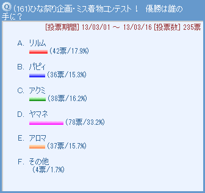
ひな祭りと言えば女の子のイベント！ ひな祭りにちなんで着物コンテストを開催しました。洋のイメージの多いキャラたちの中でのヤマネちゃん優勝は大方の予想通り！？ 皆さんの頭の中でも、可憐に着物を着こなすヤマネの姿を想像していることでしょう！ 熾烈な２位争いの結果は、リルムでした。ヤマネには無い大人の雰囲気を見せてくれそうですね。［コメント一覧］
ヤマネ(4)
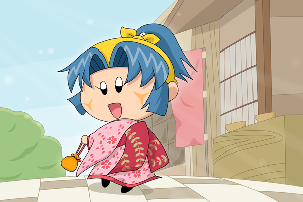
ミス着物コンテスト１位記念に、ヤマネに着物を着せてみました。実際着せてみたら、想像以上に着物が似合ってびっくり！ ヤマネのかわいさは、ミルモを知らない人たちも含め、もっと世の中に広くアピールしたいです。
本当は頭巾も外して髪飾りを付けてあげたかったのですが、頭巾の無いヤマネはヤマネでなくなりそうな気がしたのでやめ・・・。他にも着物は結構テキトーだったり…。腕に自信のある方は是非完全な着物ヤマネを描いてみては！？
そして今回１位になれなかった女の子の着物バージョンも、機会を見て描いていきたいと思います！(2013/7/15)
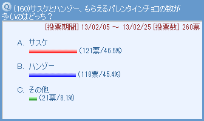
今年のバレンタインデーは、サスケとハンゾーの仲良しコンビに焦点を当ててみました。あまりチョコをもらえなさそうな二人ですが、もらえるとしたらどっちの方が多いのか…？ 結果は引き分けと見てよさそうですね。一緒…ということは二人は同じ女の子から義理チョコしかもらっていないのかも！？(^^;［コメント一覧］
ハンゾー＆サスケ＆リーネ(1)
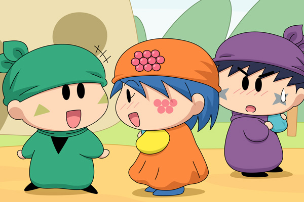
サスケ「オ、オイラにチョコをくれるのかだぜ？」
リーネ「うん、サスケくん、いつも優しくしてくれるから・・・。
これからもよろしくね！」
サスケ「お、おうだぜ。
リーネは優しくて、か、か、かわいいんだぜ・・」
リーネ「もう！サスケくんったら！
（ホント男の子って単純ね）
・・・あ、ハンゾーくん！」
ハンゾー「リーネなのら～。ボクに何の用なのら～？」
リーネ「ハンゾーくん、これ私からの気持ち！」
サスケ「えっ！ ハンゾーにもだぜ・・？？」
サスハンにチョコを渡す役として、私のオリフェ・リーネを抜擢してみました。義理チョコを渡す役なのでパピィやアロマでもよかったのですが、汚れ役を二人に演じさせると皆さんから怒られてしまうので…(^◇^;)。
サスケは煩悩の多い妖精忍者なので、義理チョコ１つでも本気にとらえて舞い上がってしまいそう。妖精忍者として失格ですが、そこがかわいいんですよね。この後何人かの女の子から義理チョコをもらってはショックを受け続けていそうです。そして夕方遅くにカメリから本命チョコをもらった際に、義理チョコと扱わなければいいのですが…。(2013/6/15)
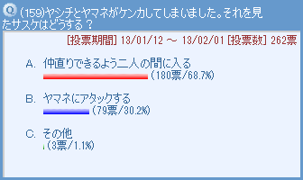
今回はサスケ視点のお題にしてみましたが、結果は実施する前から明らかでしたね(^◇^;)。ヤマネのことが大好きなサスケは、ヤマネの喜ぶ顔が見たくて、ヤマネの恋を応援せずにはいられません。もしかしたらヤマネにきっぱりと断られるのが怖いというのもありそうですね。次期アニメがあるのであれば、アニメで大失恋したサスケに、カメリのような女の子をくっつけてほしいです。［コメント一覧］
サスケ＆ヤマネ(4)
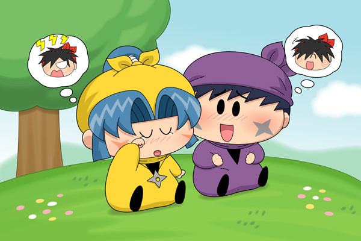
ヤマネ「私がヤシチあにさまが大切にしているパンツコレクションを
下品と呼んでしまったばっかりに・・・。
もうヤシチあにさまは私のことを許してくれないので
ございます」
サスケ「そんなことないぜ。
ヤシチの兄貴は忘れっぽいから、きっともう
ヤマネの言ったことなんて忘れてるぜ・・・」
ヤマネ「そうでございますね、私の言うことなどヤシチあにさまは
気にも留めないのでございますから・・・」
サスケ「わ～～！そうじゃないぜ！！
兄貴は照れ屋だから、オイラにだけはヤマネのことを
よく話してくれるんだぜ」
ヤマネ「本当でございますか！？」
サスケ「ああ。兄貴はヤマネと一緒に修行するのが楽しいって
前にオイラに言っていたぜ」（口から出まかせ）
ヤマネ「私、ヤシチあにさまの下へ謝りに行くでございます！」
さっきまで泣いていた表情を投げ捨てるかのように、ヤマネはきりっとした表情でヤシチの元へと飛んでいきました。
一人残されたサスケの表情は青ざめ・・・。
サスケ「まずいぜ。オイラ、テキトーなこと言っちゃったから
このままだと兄貴をもっと怒らせてしまうぜ・・・。
・・・そうだ！」
あわてて携帯を取り出し、別の妖精へ急いでメールを送りました。
お約束な展開なので、絵の方もありきたりな構図になってしまいました(T-T)。丘の上で一人で泣いていたヤマネの横に座ってなぐさめるサスケ。優しいサスケのことだから、心の底からヤマネの笑顔だけを望んでいるのでしょうね。優しいだけの男性はモテないとよく言われますが、果たしてサスケはどうでしょーか？
この後の展開も考えてみたかったのですが、ヤマネとヤシチが仲直りできるような展開がうまく想像できなかったです。我こそはという方はぜひチャレンジしてみてください！ サスケはまず誰にメールを送ったのかな？
絵の方は、暗い雰囲気になりそうだったので、背景の明度・彩度をいつもより上げてみたらいつもよりギラギラまぶしい絵に・・。ぼかし機能は便利ですが、あまり頼り過ぎないようにしたいところです。(2013/6/4)
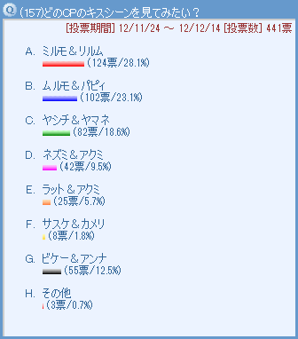
ムルモ屋本舗オリジナルCPを含めた妖精CPでキスシーンの投票を行いました。１位に選ばれたのは・・・作品の主人公でもあるミルリルでした！ この二人はいろんな場面で熱いところを見せてくれましたが、キスシーンは原作の結婚式の場面だけでしたね。なかなか見せないからこそ「見たい！」という票が集まったのかも。２位はおなじみのムルパピですね。紳士なムルモは何度かパピィにキスしてあげましたが、なぜかケンカをふっかけてしまうパピィ。恥ずかしくて暴走してしまうのでしょうね。［コメント一覧］
ミルモ＆リルム(12)
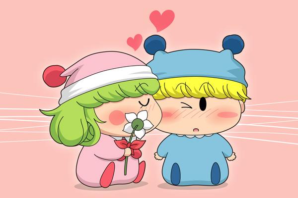
ミルモ「そういえば、今日はおめえとの婚約記念日だったよな」
リルム「ミルモ様～！
今年は婚約記念日をお忘れにならなくて
わたくしとってもうれしいですわ！」
ミルモ「ほらよ！」
ミルモはあらかじめ用意していた思い出の花をリルムに差し出しました。
リルムの顔に輝きがさらに増していきます。
リルム「ミルモ様！
お花はとってもうれしいですわ。
・・・でも・・・」
ミルモ「ん？」
：
：
ちゅっ
：
：
ミルモ「んなっ」
リルム「わたくしミルモ様に一生ついていきますわ」
殺気を感じたミルモはちょっと後ずさり。
リルムはミルモの腕をつかもうとして空振りに終わりました。
ミルモは目をそらしたまま、答えました。
ミルモ「お、おう、」
偶然にも、５月２３日の『キスの日』にちょうど重なるようにして、キスのお題の絵を描きました。頭の中ではもっといろんな構図を描いていましたが、実際に絵にしたらほっぺにちゅーの単純な構図になってしまいました(T-T)。
キスはほっぺ以外にも口や手の甲などいろいろありますが、妖精だとどうしてもほっぺを想像してしまう私。リルムも本当はお口のちゅーをしたいのかもしれませんが、緊張してほっぺになってしまうのでしょうね。(2013/5/23)
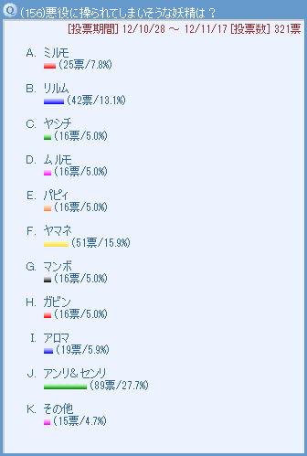
かわいい妖精だからこそ、たまに悪に染まったバージョンも考えてみたくなりますよね（私だけ？）。今回は悪に染まりやすそうな妖精を選んでいただきましたが、１位はアンリとセンリでした。素直で純粋な妖精ほど誰かの影響を受けやすいお約束がこの二人に一番当てはまるのでしょうね。２位のヤマネもおそらく同じ理由でしょうね。４位のミルモはチョコにつられて…という違う理由でしたが(笑)。［コメント一覧］
アンリ＆センリ(10)
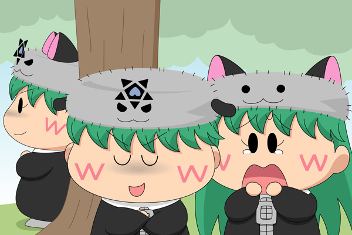
センリ「ボクたちこれからは別々に行動するから。
だってボクもうアンリと一緒にいるの嫌だもん」
アンリ「センリ、さっきからどうしちゃったの？
いつものセンリに戻って・・・」
センリ「ボクはいつものセンリだよ。
ずっと前からアンリと一緒にいるの嫌だったんだから…」
アンリ「センリ～～っ＞＜」
時は１３４話「グルミ族の勇者キンタ！？ 」から１年後、突如現れた悪の存在によって、グルミの森は荒廃し、グルミ族たちもその悪に操られていました。
悪の存在はドクタ博士が開発していたタイムマシンに目を付け、悪に操られたアンリとセンリを１年前の世界に送り込み、双子の仲を引き裂く作戦に出ました。グルミの森を救った双子たちの活躍を無くし、さらに荒れた世界を手に入れるために。
テキトーな設定と絵ですみません。アンリとセンリは悪に染まっても一緒に行動しそうなので、このようなパラレルワールドな展開にしてみました・・・が、よく考えたらセンリだけ悪に染めればこんなややこしい設定にならなかったかも(^^;。(2013/5/11)

臆病な妖精と言えばグルミ族…ですが、お化けが絡むとまた変わりますね。ミルモとワルモ団の一騎打ちとなりましたが、僅差でワルモ団が臆病王に選ばれました！ いい大人がこんな不名誉な称号をゲットしていいのか！？ でもワルモ団のことだから「どうだ参ったか」といばりそうですね。２位のミルモは、その横で「助かったぜ」と、この後の絵のネタにされなかったことでホッとしていることでしょう(笑)。［コメント一覧］
ヤシチ＆ハンゾー＆サスケ＆ワルモ団(1)
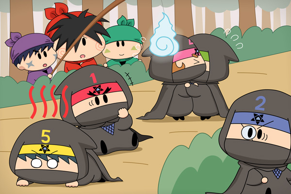
ごめんなさい、「お化け屋敷」の設定を見落として描いてしまいました(^◇^;)。
ヤシチたちがミルモを臆病王にさせるべく、道で待ち伏せをしていましたが、予定外にワルモ団が先にやってきたことで大混乱に…な絵です。１枚の絵に８人もの妖精を描いたのは初めてだったり。数が多い分、構図などが雑になってしまったのは否めませんが・・・。
そんなワルモ団も、アニメでは５人一緒くたではなく、それぞれ違った反応をするんですよね。絵の方も反応を変えてみましたが、結構テキトーな部分もあるので、ワルモ団マニアの方から「○○○はこんな反応はしない」とお叱りを受けないか心配だったりします。(2013/4/26)
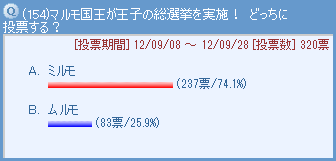
今回の投票は王子対決を行ってみました。身分的に第１王子であるミルモが次期国王の椅子に座るわけですが、投票を行ってみたらもしかしたら…。が、結果はやはりミルモの圧勝でした。普段だらしない姿を見せるミルモですが、やはりいざというときの頼れるリーダーでもあるんですよね。そして大差を見せつけられたムルモは何を思うのだろうか？［コメント一覧］
ミルモ＆リルム(11)
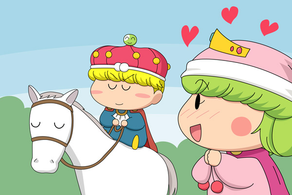
リルム「ミルモ様、とっても素敵ですわ」
ミルモ「へへ～ん、こんな上品な姿が似合うのは
オレ以外にはいないだろうな」
１３７話「本気で誕生！？ミルモ王」の国王見習い中のミルモを、もう少しかっこよく描いてみました。こうして描いてみると意外に似合いますね。リルム王妃もそんなミルモにメロメロです(笑)。ふてくされたヤシチは仮装行列と馬鹿にしそうですが。
でも面倒くさがり屋のミルモは、このロイヤルな恰好は３日も経たずして飽きてしまいそうです。(2013/4/21)
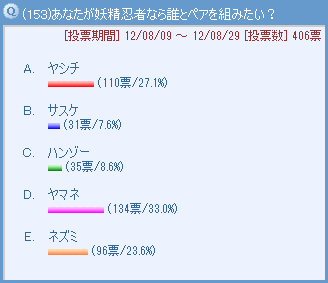
ペア組んで何をする？ そもそも妖精忍者って普段何をしているの？ というように、今回のお題は選ぶのがちょっと難しかったかもしれません。ヤシチ、ヤマネ、ネズミの三つ巴の中、最終的にはヤマネが一歩抜きんでました。かわいくて誠実なヤマネと一緒に行動すると、妖精忍者の任務も楽しくなりそうですね。［コメント一覧］
ヤマネ＆ネグネ(1)
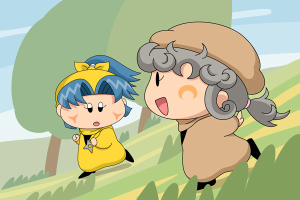
皆さんを代表して、まつりんらさんのオリフェ・ネグネにヤマネとペアを組んでいただきました。ネグネについてまつりんらさんに聞いたところ、ヤマネと同世代で、忍術の腕前も立つとのことです。
妖精忍者の里での恒例イベント「２人１組でゴールを目指せ！」にて。
ヤマネ「ネグネ殿、序盤からそんなに飛ばすと
後が大変になるでございますよ」
ネグネ「大丈夫なの。
ゆっくりしてるとみんなに負けちゃうの」
ヤマネ「そうでございますね。
私もネグネ殿のペースに合わせるでございます」
山を２つ超えたところでネグネが後ろを振り向くと、ヤマネはだいぶ後ろに・・・。普段からペース配分しないで全力投球なネグネのペースは思った以上に速く、ヤマネは何とかついていくのが精いっぱいなのでした。
・・・すみません、ネグネの純粋という設定の解釈が間違っている可能性大です。そして勝負事にこんなに執着しない性格なのかもしれません。
人様のオリフェを描くのはものすごく緊張しますが、練習になるのでまた描いてみたいと思います。(2013/4/8)
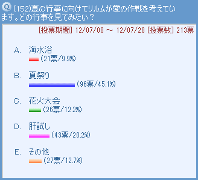
すっかり季節外れなお題ではありますが、昨年夏に、夏向けのリルムの投票を行いました。妖精界でもたくさんの行事が予定されている（と思われる）夏。リルムも愛の作戦を夢中で考えていますが、その中で１位に選ばれたのは夏祭り。屋台や浴衣のアイテムに加え、はぐれないようにくっつくシチュエーションもミルリルにぴったりですね。［コメント一覧］
ミルモ＆リルム＆クモモ(1)
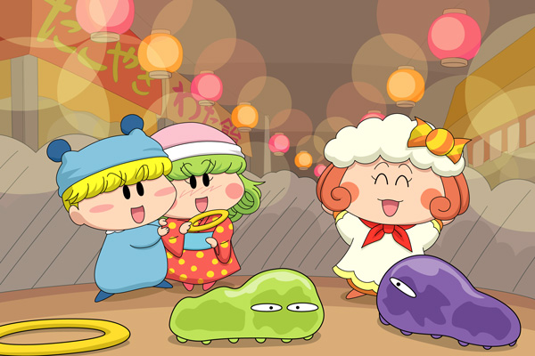
ミルモ「くそーっ、ナンダカワカンナイノのくせに
なんて動きが素早いんだ！」
クモモ「ナンダカワカンナイノに輪っかを通したら
クモモ特製お菓子１年分サービスチケットをプレゼントするクモ！」
ミルモ「あとはリルムの輪っかしか残ってねーからな。
リルム、しっかり狙って投げるんだぞ」
リルム「ミルモ様がわたくしの腕をつかんでくれてる・・・。
ドキドキですわ(^^)」
夏祭りと言えば屋台！ ということでミルリルの屋台デート(?)を描いてみました。背景がごちゃごちゃしてしまってあまり夏祭りに見えませんが、屋台の並ぶ通りを想像していただければと思います。
リルムにも浴衣を着せてみました。私の中で「妖精＝子供っぽさ」のイメージがありますので、あえて子供っぽいデザインの浴衣を着せてたりします。皆さんならどんな浴衣を着せるのでしょーか？
夏祭りは夜遅くまで続きますが、夏祭り後の展開は皆さんにて自由にお考えくださいませ(笑)。(2013/3/14)
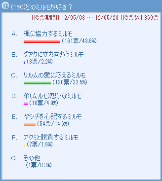
前回の更新からだいぶ時間があいてしまい、ごめんなさい。今回はムルモ屋本舗ではいまいち影の薄い(?)、主人公ミルモをお題にしました。原作やアニメでは数えきれないほどの活躍を見せてくれましたが、その中でも楓との活躍が圧倒的多数の票を集めました。くもっちょをくれるまでは非協力的だけど、やるときはやるミルモ。もしもアニメ復活する際には、再び楓とのパートナー関係を見てみたいですね。［コメント一覧］
ミルモ＆楓(1)
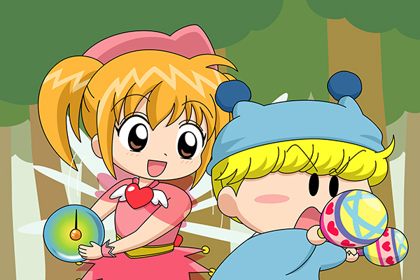
１位が楓がらみなので、不慣れな妖精楓に挑戦してみました。サイト１０年目にして初描きだったりします(^^;。いや～、人間は骨格が難しい。アニメを参考に描きましたが、作画監督さんによって絵柄がだいぶ異なることにも今更気づきました。
絵の場面ですが、ワルモ団に再び『時の宝玉』を奪われてしまって、二人で取り戻す・・イメージです。後ろからしつこく追ってくるワルモ団をミルモが魔法で追い払おうとします。しかしワルモ団の予想外な攻撃に、二人は逃げるだけで精一杯・・。
二人は時の宝玉を使って未来へ逃げることに。そこは荒廃した妖精界で、妖精たちは悪の存在の奴隷として働かされていました。二人は未来を救うべく、現代に戻ってヤシチたちに応援を求めるのであった―――。
ちなみに”悪の存在”はムルモにそっくりな妖精だったりします(笑)。(2013/2/18)
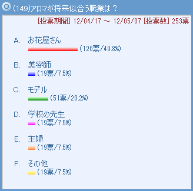
前回の投票で１位に選ばれたアロマちゃんで、再び投票を行ってみました。アロマにお似合いの職業を選んでいただきましたが、お花屋さんがダントツ１位でした。アロマという名前に加え、癒しの笑顔を見せるアロマにぴったりな職業だと思います。個人的には２位のモデルが気になったりします。アロマに派手な服を着せてみたい…。［コメント一覧］
アロマ(5)
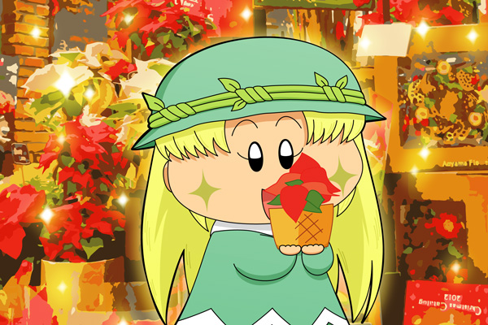
お花屋さんのアロマをイメージしてみました。やっぱりアロマには、前回の冒険モノよりもお花屋さんの方が断然似合いますね(笑)。実際にこんなかわいい店員さんがいたら、私は毎日お花を買いに通いつめますよ！
背景は、とあるお花屋さんを写真に撮り、その写真をIllustratorで加工しました。写真そのままだと妖精の雰囲気に合わないので、１６色に減らしてさらに色を調整しています。使い慣れない機能なので、雰囲気を出すのにかなり苦戦しました。
ちなみにアロマが手にしているのはポインセチアです。季節はもうクリスマスですね～。(2012/11/21)
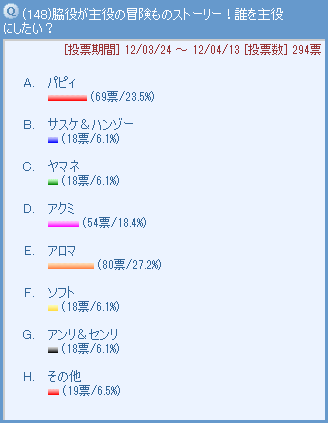
今回は脇役妖精をターゲットに、冒険ものストーリーの主役にふさわしい妖精をアンケートで聞いてみました。１位は何とアロマちゃん！ お嬢様で箱入り娘なアロマの冒険は危なっかしい冒険になりそうですね。むしろそういったミスマッチさを見てみたいということでしょうか。２位はやっぱり強かったパピィ！ こちらはわいわいがやがやした、にぎやかな冒険になりそうです。掲示板にて、皆さんの考える脇役妖精の冒険ストーリーを聞かせていただけたら幸いです(^^)。［コメント一覧］
アロマ(4)
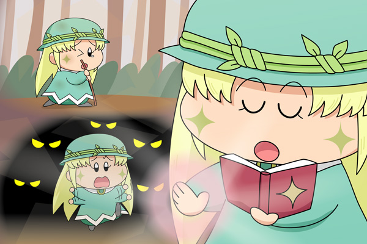
１位に選ばれたアロマに冒険をさせてみるとこんな感じでしょーか？ 全然似合わないなぁと思いながらも、描いていて楽しかったです。
ストーリーは完全に後付けですが・・・、アロマが自宅で紅茶を飲みながら読書をしていたら、突然本の世界に吸い込まれてしまいました。そこは楽器による魔法が使えない世界。うちわで空を飛ぶこともできません。
しかしながら、読んでいた本と同じように呪文を使うことなら出来るようです。アロマは勇気を振り絞って、妖精界に戻るために出口を探す旅に出ることしました。
主役がアロマなだけに、はちゃめちゃな冒険になりそうな気がします(^◇^;)。(2012/10/24)
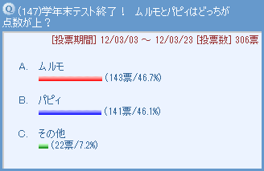
妖精学校にペーパーテストがあるのかどうかは分かりませんが、あれば間違い無くムルパピは張り合いそうですね（と言ってもパピィの方から勝負を挑みそうですが）。投票結果では引き分けかな…。いや、微妙にムルモが票数を上回っていますね。とはいえ、点数にかかわらず二人はケンカを始めてしまうお約束があるような…。［コメント一覧］
ムルモ＆パピィ(27)
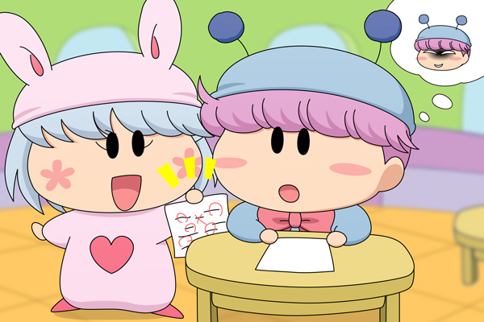
パピィ「あたち今回全然勉強ちなかったのに、
９５点も取れちゃった・・・。
あたちって天才かも」
ムルモ「・・・って何見せびらかしてるんでしゅか！」
パピィ「ほれほれ～。
お馬鹿なムルモは６０点も取れていないんでちょ？」
ムルモ「そんなこと言ってられるのも今のうちでしゅ」
学年末テストが返ってきた光景を描いてみました。誰でも良い点数取ると見せびらかしたくなるんですよね（そんなことはない？）。普段は点数の悪いパピィも、今日はここぞとばかりにムルモに見せびらかします。
しかし・・・！ 今回の投票結果はムルモの方が得点が上！ ムルモはちゃっかり１００点を取っていそうです。そして、ずるがしこいムルモなので、パピィを絶頂まで調子づかせた後で反撃に出る作戦を考えていたり…(^◇^;)。パピィの悔しがる表情は皆さんの頭の中でたっぷり想像して欲しいです^^。(2012/10/9)
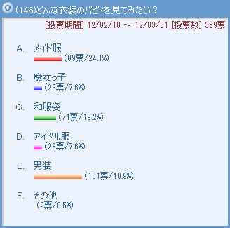
何度かテーマにしている妖精の着せ替えですが、今回はパピィを対象にしてみました。結果は男装のパピィ！ いつもと違った雰囲気のパピィを見てみたいという皆さんの思いを感じました。皆さんならどんな男装のイメージを思い浮かべるのでしょうか？ ２位のメイド服は定番ですね。メイド服はムルモも得意としている分野なだけに、二人で張り合いそうな予感…。［コメント一覧］
ムルモ＆パピィ(26)
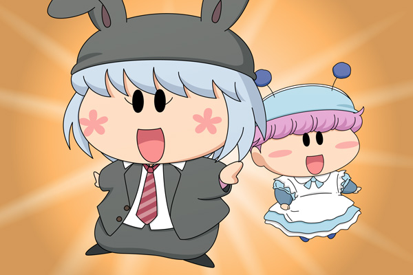
パピィ「ムルモ～。見て見て！
リクエストに応えて、男装にちてみたの」
ムルモ「・・・。
（くっ、パピィのくせになかなかやるでしゅね）」
パピィ「似合ってるって早く言いなちゃいよ！」
ムルモ「ムルモでポンっ！」
：
ムルモ「ボクの女装の方がかわいいに決まってるでしゅ！
不思議の国のムルモでしゅ～」
パピィ「むっ、あたちと張り合う気！？ 上等よ！！」
一言に男装と言っても難しいですね。私の男装のイメージで描いてみましたが、皆さんならどんな男装をさせるのでしょうか？ ちなみにイメージは某ジャ○ーズ系ですが、詳しい人からツッコミをもらいそうです(^◇^;)。(2012/7/30)
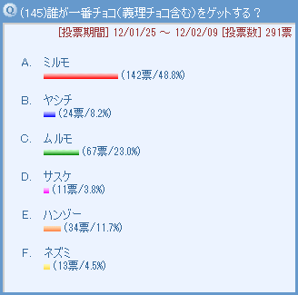
２月の投票と言えば、やっぱりバレンタインネタですね。ということで男の子妖精がもらうチョコの数を競わせてみました。１位はダントツでミルモ！ チョコ好きにはたくさんのチョコが集まるのかもしれませんね。もしくはミルモの方から「チョコをよこせ！」かもしれませんが…。逆に不名誉な最下位をゲットしたのはサスケ。せめてヤマネから義理チョコをもらえればいいのですが。。［コメント一覧］
ミルモ＆リルム＆ソフト(1)
本当はミルリルを描くはずが、なぜか邪魔が入ってしまいました(^◇^;)。ミルモはこの時期はいろんな女の子妖精からチョコをもらうので、婚約者のリルムはいろいろと大変でしょうね。ミルモもリルムから逃げようとしそうですし(笑)。
今回は誰がミルモにチョコを渡すかで悩みましたが、いろいろ考えた末にソフトちゃんになりました（ちなみに一番最初はピカリにする予定でした）。ミルモは普段男の子とばかり遊んでいるので、ミルモと同世代の女の子が少ないんですよね。逆にムルモ世代は多かったりします。(2012/6/9)
やっと２０１２年の投票に入りました！ 新年早々からムルパピは羽根突きバトルを繰り広げています。１位に選ばれたのは引き分け。勝負がつかなくてお互い力尽きるまで…といった展開を想像してしまいますね。ラストはやっぱりケンカでしょうけど、ケンカの果てにラブラブなのもお約束なので、今年も良いムルパピが見れそうです(^^)。［コメント一覧］
ムルモ＆パピィ(25)
特に解説をするまでもなく、ムルパピの羽根突き勝負です(^◇^;)。投票結果では引き分けとなりましたが、私はパピィ優勢な展開をまず考えてしまう方です。ムルモも最初は紳士ぶっていたけれど、途中で火が付いて本気になるでしょうね。
今回は二人のお正月な衣装をどうするかで悩みました。パピィの着物は、昔アニメで放送された『あんみつ姫』を参考に。調べてみたら１９８６年放送…って知っている人はかなり少なそうだなぁ（かくいう私もアニメはほとんど見たことないです）。(2012/4/15)
以前のミルモに続いて、今回はハンゾーで2Pカラーネタを行ってみました。サスケ色、ヤシチ色、ネズミ色、ピンク、黒と用意しましたが、１位は黒でした（私はネズミ色を予想していました^^;）。速そう、とか、かっこいい！という意見が多いですね。実はハンゾーには隠れた能力があるのでは？という期待も感じられます。そして「ちょい悪」というコメントが面白くて…。ちょい悪なハンゾーもかわいいなぁ。［コメント一覧］
追っ手１「いたぞ！ 何としても巻物を取り返すんだ！」
追っ手２「くそ！また変わり身の術を…。何なんだあのすばしっこい奴は…！」
というわけで、ちょい悪で速そうでかっこいいハンゾーを描いてみました（何もかも手抜きでごめんなさい）。黒ハンゾーが何かの任務で重要な巻物を盗んでいます。彼もまた「○○なのら～」と語尾を付けてしゃべるのでしょうか？
こうして描いてみると、ハンゾーは実は忍術の能力が高いのでは？と思ったりしますが、いつもの緑色にするとやっぱり似合わないんだろうなぁ。翌日、何も知らない緑ハンゾーが引っ捕らえられないか心配。。(2012/3/2)
今回はサスケとハンゾーを比べてみました。結果はまさに「どっちもどっち」でしたね。コメントは何となくハンゾーの方が将来性があるような内容が多いですが、今の時点ではまだまだ分かりませんね～。皆さんなら将来の二人をどんな風に想像しますか？［コメント一覧］
ハンゾー「くもっちょまでもうすぐなのら～。・・ほろっ？」
サスケ「わーーーっ、ハンゾーこけるなだぜ！」
ミルモ「ん？」
二人の忍術修行のために、ヤシチは二人にミルモからくもっちょを奪ってくるように命じました。ミルモの背後から忍び寄ろうとしましたが、結果は失敗…。ちなみにミルモはテレビに夢中だったので、ハンゾーのこける音ではなく、サスケの大声で気がついたというシチュエーションで。。
この後二人は「ミルモのくもっちょを盗もうとしたわけではないのら～」とか「べ、別にヤシチの兄貴がそんなことしろとか言ってもないぜ」とか言ってしまい「ヤシチの野郎～～っ」な展開になるのでしょーか？(2012/2/26)
だいぶ時間が経ってしまいましたが、昨年１０月にハロウィンをお題とした投票を行いました。毎年仮装の投票を行っていますが、今年の１位はミルモ＆リルムが選ばれました！ やはり主役は強いといったところでしょうか？ 皆さんはこの二人ならどんな仮装が似合うと思いますか？［コメント一覧］
ミルモ＆リルム(9)
気がつけばハロウィンとは全然関係無い絵を描いてしまいました。仮装というか、ただの着せ替え・・・(^^;。
元ネタは、カプコンのゲーム『バイオハザード０』です（公式ページはこちら）。プレイヤーは主役の２人を切り替えながら、時にはアイテムを渡し合ったりして先へ進んでいくゲームです。元ネタが分かる人はかなり少ないでしょうね(^^;。
何でバイオハザードなのかは、「何かこの二人にカッコいい仮装をさせてみたいなぁ」と思ったのがその理由です。キャッチフレーズの「背中合わせのライブ感」もこの二人に合っているような合っていないような…。
ミルモ「オレの背中越しに何か危険なモノを感じるんですけどぉぉ」
(2012/2/25)
今回は久々にアクミをお題にしてみました。怪盗＆探偵モノを掛け合わせてみましたが、悪役として定着しているアクミにはやはり怪盗が似合うようですね。逆に探偵役や警察役の方は、失敗するイメージのコメントが多くて面白かったです。その他の「被害者」役も面白そう…。被害者のフリして実は怪盗とか！？［コメント一覧］
アクミ(5)
怪盗なアクミを描いてみました。某探偵オペラアニメのアル○ーヌを意識してかっこよく描いたつもりでしたが、どう見ても普通の黒アクミですね(^◇^;)。もしも探偵役がミルモだったら「んだよ、アクミかよ」という残念な言葉をかけそうです(笑)。いろいろ構図とかおかしいですが、そこは雰囲気で。。
皆さんならアクミをどんな怪盗に変身させますか？(2012/1/29)
原作やアニメでもいろいろな妖精忍者が登場しましたが、欲を言うともっといろんな妖精忍者が増えて欲しいですよね。皆さんの望む妖精忍者は…ヤマネのライバルが選ばれました。無敵の強さを誇るヤマネを苦しめるのは、恋のライバルになるのか、それとも異性のライバルなのか？ ２位もやはりヤマネのライバルとなりそうですね(^◇^;)。ぜひ皆さんも妄想をふくらませて、面白い展開を考えて欲しいです(^^)。［コメント一覧］
ヤシチ＆ヤマネ＆モモカ(1)
モモカ「ヤシチ先輩！
今日はわたしがお弁当を作ってきたのですっ」
ヤシチ「おぉ、モモカは料理も出来るのか！
うまそうなサンドイッチ、それに拙者の好物のかりんとうも
こんなにたくさん・・・。
拙者はうれしいぞ～(^^)」
モモカ「わ～っ、ヤシチ先輩に喜んでいただけると
モモカもうれしいです～」
ヤマネ「ヤシチ兄様・・・」
ヤシチ「ん？どうした？
ヤマネも一緒に食べようではないか」
ヤマネ「はい・・・」
今日は妖精忍者の校外学習。上級生１人が下級生２人を連れて遠足に出ています。ヤシチとヤマネ、そしてヤマネの隣のクラスのくのいち忍者・モモカでグループを組みましたが、どうやら３人で仲良く…ではないようです。
モモカ（ヤマネ・・・あんたはこうして落ち込むといいわ！
その隙にわたしが成績１位を奪い取ってみせるんだからっ）
はい。原因はこの人、モモカにあるようです(^◇^;)。
女の子のバトルは恐ろしいですね。
・・・ヤマネのライバルを勝手に考えてみました。ヤマネを苦しめる存在は、やっぱりかわいい女の子なのだと思います。そして成績も優秀で…。
そこから考えてみたオリフェ・モモカを紹介しますね。
名前：モモカ
性別：女の子
特徴：成績は結構優秀（学年でも３～４番目くらい）。
見た目のかわいさで、妖精忍者の男の子たちからも人気。
ただし性格に難あり。
以前にもモモカの嫌がらせを受けた女の子がいるとかいないとか…。
あ、別にヤシチのことは好きではないみたいです。
私の考えるオリフェは性格の悪い妖精ばっかりですね(^^;。(2012/1/28)
年末恒例の企画・妖精人気投票の練習として、二択の投票を行ってみました。２０１１年は掲示板ではヤシチの人気が目立ちましたが、実際はどうなのか？ 人気上位のネズミを負かす程の勢いがあるのか？ 結果は見ての通り、ついに赤が青を負かす結果となりました。果たして本番ではどっちが勝つことになるのでしょうか！？［コメント一覧］
ヤシチ＆ハンゾー＆サスケ＆ネズミ(2)
ネズミ「拙者がヤシチと人気を争うなど、くだらぬ話でござる」
ヤシチ「ヤシチくんブームを起こしてくれた拙者のファンのためにも、
拙者の本当の実力のすごさを今こそ見せてくれるっ！
ヤシチでポン！」
サスケ「がんばれ兄貴～！
ネズミさんなんかに負けるなだぜ～～」
ハンゾー「いったい何の勝負をしているのら？」
二人の熱き戦いを絵にしてみました。忍術では勝てないと思ったヤシチは、魔法で応戦します。魔法だとヤシチの方が能力は上のような気がしますが、皆さんはどうお考えでしょうか？
二人は人気をかけて熱く戦っていますが、２０１２年は左下の緑色の妖精忍者が人気をさらっていきそうな予感がします(^^;。(2012/1/16)
リルムとパピィが手を組んだらまず計画しそうな内容をテーマにしてみました。ミルモとムルモにとっては恐ろしい計画になりそうですが…。１位はダントツで遊園地！ 多くの方が観覧車でのドキドキなシーンを想像されていますね(^^)。２位は山へのピクニック。こちらはいろんなトラブルに巻き込まれそうな予感がします。果たしてミルモとムルモから愛を感じることができるのか？ 皆さんもぜひ妄想してみてくださいね。［コメント一覧］
ミルモ＆リルム＆ムルモ＆パピィ(2)
やはり観覧車でのシーンを描かないといけませんね。
まずはリルムの先制攻撃！ 逃げ場の無い観覧車で、果たしてミルモはリルムの唇攻撃から逃げることが出来るのでしょうか！？ それを見たムルモが守りの体制に…。かなりお約束な展開ですね(^◇^;)。
バックの空を夕焼けにして、両カップルとも意外といいムードにさせればよかったかな…とかなり後悔しています(^^;。(2011/12/31)
ミルモの続編が望まれますが、皆さんの期待するストーリーは圧倒的に「ダアクの復活」ですね。悪と戦うミルモの姿、２年目ラストで見られたギリギリの戦いをもう一度見てみたいのは私も一緒です。ただ前回と同じ展開には決してしないアニメミルモなので、「今度こそやばい」可能性はありですね。非常事態を救う新たな存在が現れるのかも！？［コメント一覧］
ミルモ＆ヤシチ(7)
ダアクの復活というお題なのに、私の技術不足という理由でダアクは描けませんでした…。その代わりにミルヤシでご勘弁を(^◇^;)。無茶をするミルモを心配するヤシチ、しかしその二人に新たな攻撃が仕掛けられる・・・！
今回は少し色合いを変えて、よりアニメに近い配色にしてみました。鮮やかなアニメ調は描いていて楽しいのですが、これに合う背景を考えるのが大変だったりします。また別の機会に、別の妖精でアニメ調で描いてみたいと思います。(2011/10/10)
前々回に引き続き、ニュース３人娘を投票に登場させてみました。取材対象として１位に選ばれたのはアロマでした。よく言うと仕事熱心、悪く言うと強引で迷惑な取材な３人の取材は、アロマからどんな事実を聞き出すのでしょうか？ コメントを見ると、以前にぽろっとしゃべった恋のお相手の話題に期待が集まりますね。
最後に、ワカバ役の川上とも子さんのご冥福をお祈りします。［コメント一覧］
アロマ＆ワカバ＆トモン＆チーエ(1)
ワカバ「アロマさんの恋のお相手について詳しく教えていただけますか？」
アロマ「きゃっ。
私にはそのようなお方は…」
トモン「いいえ、これは読者からの確実な情報よ。
お嬢様アロマちゃんの恋のお相手、これは大スクープで決まりね！」
チーエ「アロマちゃんの真実をお伝えするのが私たちの役目なんです～」
アロマ「いったいどうすれば・・・」
困ったアロマは、ムルモに相談を持ちかけました。しかしそこにも３人娘の影が…。「アロマお嬢様、第二王子と再び婚約！？」という間違った事実を新聞に載せられてしまったアロマの運命は？ そしてムルモとパピィを交えたトラブルの結末は！？
結局前々回と同じような絵になってしまいました(^^;。私的に、アロマとヤマネは困らせたいキャラの第１候補なので、二人のこんな表情ばかりを描いているような気がします。もしかしたらアロマちゃんの癒しの効果が３人娘の取材を跳ね返すのかもしれませんが。次描くときは、オロオロではなくお嬢様なアロマも描いてみたいです。(2011/9/18)
原作もアニメも基本的にギャグ路線でしたが、好きなキャラのシリアス展開も見てみたいと思うのがファンの気持ちですね。投票の結果はヤマネが１位に選ばれました。アニメでもヤシチとのことで落ち込んだり、またダアクに体を乗っ取られたりと、確かにシリアスの素質はありますね。２位のミルモも主人公＆王子として、みんなの見えないところでシリアス展開な活躍をしているのかも！？［コメント一覧］
ヤマネ＆ネズミ(4)
ネズミ「これは・・・」
ヤマネ「妖精学校の歴史の教科書でございます。
ほっぺの模様は家族で引き継がれると書いてあるのに、
どうして私は兄様と…」
ヤマネは言葉を詰まらせました。
ネズミもヤマネから視線を逸らします。
ネズミ「ヤマネ、これ以上くだらない話をするなでござる」
ヤマネ「くだらない話ではないのでございます！
ネズミ兄様が本当のことを話してくれるまで
ヤマネは家を出るでございます！」
勘違いの多いヤマネは見落としていました。
ほっぺの模様は父親または母親のどちらかから引き継がれるため、兄妹で模様が違う可能性があることを…。
ネズミ「さてと・・・あの能無しダメ忍者の所へ行かれると面倒だから、
早めに止めるでござるか・・」
全然シリアスでも何でも無かったですね。単に私が泣き顔のヤマネを描きたかったという…。そもそもシリアスとはもっと壮大なストーリーや設定の上で展開するものなので、その前準備にあと１０枚分くらいの絵が必要ですね。
この兄妹のほっぺの模様は掲示板でも何度か話題に上がりますが、実際の所謎ですよね。他にもキンタとポンタで違っていたり、時の妖精はみんな同じ模様だったりと、設定があまり統一できていないという可能性も高そうです。(2011/9/5)
今回の投票は脇役にスポットを当ててみました（普段から脇役の投票ばかりですが^^;）。アニメミルモにはたくさんのゲスト妖精が登場しましたが、ほとんどの妖精が１回で役目を終えてしまったのがちょっぴり残念…。ゲスト妖精も個性的なキャラばかりでしたので、アニメ放送中にも公式でこういう企画があればいいのになぁと私は思います。
たくさんの選択肢の中から１位に選ばれたのは、ニュース３人娘。取材の仕方にやや問題のある３人ですが、それをいろんな妖精に行って欲しかったですね。コメントにもあるように、パピィに取材したら、勘違いして別の妖精との恋人関係を新聞に載せてしまったりして！？［コメント一覧］
ワカバ「ガイア族様！ 今回の戦いは今後どんな展開になると思いますか？」
ピクモ「あなたたちも手伝って欲しいんだけど・・・」
ワカバ「いいえ、どんな状況でも真実をしっかり伝えるのが私たちの役目なのです！」
トモン「ちょっとワカバ・・・。さすがに私たちも手伝った方がいいんじゃない？」
１００話「我が名はダアク」の妖精界に、勝手にニュース３人娘を登場させてみました（もしかしたら登場していたかもしれませんが^^;）。ワカバはこの絵のように、真面目にならなくていいときに真面目になるような気がします。相手がピクモだから良かったものの、これがフィアだったらワカバは大変な目に遭っていたかもしれませんね(^◇^;)。(2011/8/11)
今回は双子のアンリとセンリを比べる難しい投票のお題でしたが、結果はまるで狙ったかのようなほぼ一致の票数。これは同数と見るべきでしょうね。もしも恋人を作るなら二人同時に、もしくは二人とも恋人を作らずいつまでも一緒…という可能性が高そうです。でも二人のうちのどちらかが最初に行動を起こすストーリーも見てみたかったりして！？［コメント一覧］
アンリ＆センリ(8)
アンリ「あのね、センリ・・・。
ちょっと聞いてくれる？」
センリ「うん、聞いてあげるよ」
アンリ「○○○ってすごく優しいよね」
センリ「そうだね、いつも優しいね」
アンリ「それで○○○のことを考えると胸がすごく熱くなるの…」
センリ「ボクも双子の△△△のことを考えると胸が熱くなるんだ」
アンリ「センリもそうなの？
よかった…私たち病気じゃないんだよね」
センリ「アンリがそうなら病気じゃないと思うよ」
アンリ「ねぇ、今から一緒に二人に会いに行かない？」
センリ「そうだね、一緒に会いに行こうよ」
今回は恋に熱くなる二人を描いてみました。二人はいつまでも一緒派なアンリ＆センリファンに怒られないかドキドキ…。アンリが少しだけ大人っぽく見えるように意識してみましたが、果たしてどうでしょうか？
恋愛に奥手な二人を恋に目覚めさせる相手は、さらに恋に奥手な予感がします。そんなスローペースな恋にいろいろと試練を与えたくなる私。新たな邪魔者が入ったり、突然の別れがやってきたり。そういう展開を考えるのも面白いですね。(2011/7/14)
(2014/9/5)